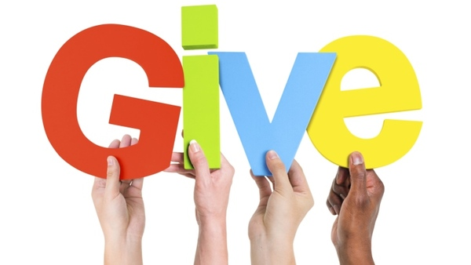

Ready for social actions
Tap on students creative talents to advance the worthy cause and strengthen the nonprofit's sense of community. Ask each artist to pay a nominal registration fee to showcase their work, then set a flat ticket price for attendees to browse the collection. While asking local artists to get involved as well.
Car washes are often overlooked, but they can be a great way to take a task off someone's to-do list while simultaneously converting them into a supporter of our cause. Host the event at a location that's easily visible and accessible from high-traffic areas. We'll also make sure that we have plenty of space to wash, dry, and collect money from customers. Strategize how we plan to promote our upcoming car wash so donors can bake it into their busy schedules. Social media and email are great places to start, but word of mouth can be just as impactful.
Spelling bees are not only fun to watch, but also present a great opportunity for younger supporters to show their skills. We can advertise our spelling bee event at local schools, gyms, churches, and restaurants, and take the marketing efforts online with a series of social media posts leading up to the event.
Get ready for some sweet aromas with this classic fundraising idea. To make this fan-favorite event a little more interesting, invite participants to compete to bake the most delectable treat. People can donate for the chance to taste test and vote for their favorites, or scrap the competition idea and simply charge a flat rate for each baked good someone purchases. We are just sure to review all food serving laws before setting up our table on campus.
Whether gathering in person or online, a cooking class is a great way to interact with the community in a relaxed, creative environment. Charge a flat registration fee or offer a fundraising minimum for supporters to earn their spot in class. Then we host the event virtually and charge admission to attend the Livestream. we can also include an incentive for larger donations by offering time with the chef after class for anyone who reaches the tier two fundraising level.